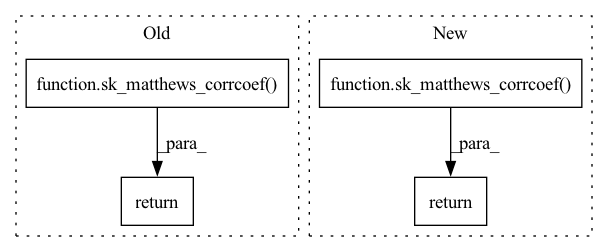

Pattern ID :18343

Before Change
sk_preds = preds.view(-1).numpy()
sk_target = target.view(-1).numpy()
return sk_matthews_corrcoef(y_true=sk_target, y_pred=sk_preds)
def _sk_matthews_corrcoef_multilabel_prob(preds, target):
sk_preds = (preds.view(-1).numpy() >= THRESHOLD).astype(np.uint8)
After Change
idx = target == ignore_index
target = target[~idx]
preds = preds[~idx]
return sk_matthews_corrcoef(y_true=target, y_pred=preds)
@pytest.mark.parametrize("input", _binary_cases)
class TestBinaryMatthewsCorrCoef(MetricTester):
In pattern: SUPERPATTERN
Frequency: 6
Non-data size: 4
Instances
Fragment ID: 60037060
Project Name: lightning-ai/metrics
Commit Name: 7ca0b85ce2fddea44c0301a5967c743a6fe6b148
Time: 2022-09-13
Author: skaftenicki@gmail.com
File Name: tests/unittests/classification/test_matthews_corrcoef.py
M Class Name: AnonimousClass
N Class Name: AnonimousClass
M Method Name: _sk_matthews_corrcoef_binary(3)
N Method Name: _sk_matthews_corrcoef_binary(2)
M Parent Class:
N Parent Class:
M File Name: tests/unittests/classification/test_matthews_corrcoef.py
N File Name: tests/unittests/classification/test_matthews_corrcoef.py
M Start Line: 42
M End Line: 45
N Start Line: 40
N End Line: 51
'>
Before Change
sk_preds = preds.view(-1).numpy()
sk_target = target.view(-1).numpy()
return sk_matthews_corrcoef(y_true=sk_target, y_pred=sk_preds)
def _sk_matthews_corrcoef_multidim_multiclass_prob(preds, target):
sk_preds = torch.argmax(preds, dim=len(preds.shape) - 2).view(-1).numpy()
After Change
idx = target == ignore_index
target = target[~idx]
preds = preds[~idx]
return sk_matthews_corrcoef(y_true=target, y_pred=preds)
@pytest.mark.parametrize("input", _multiclass_cases)
class TestMulticlassMatthewsCorrCoef(MetricTester):
'>
Fragment ID: 60037058
Project Name: pytorchlightning/metrics
Commit Name: 7ca0b85ce2fddea44c0301a5967c743a6fe6b148
Time: 2022-09-13
Author: skaftenicki@gmail.com
File Name: tests/unittests/classification/test_matthews_corrcoef.py
M Class Name: AnonimousClass
N Class Name: AnonimousClass
M Method Name: _sk_matthews_corrcoef_multiclass(3)
N Method Name: _sk_matthews_corrcoef_multiclass(2)
M Parent Class:
N Parent Class:
M File Name: tests/unittests/classification/test_matthews_corrcoef.py
N File Name: tests/unittests/classification/test_matthews_corrcoef.py
M Start Line: 70
M End Line: 73
N Start Line: 130
N End Line: 142
'>
Before Change
sk_preds = preds.view(-1).numpy()
sk_target = target.view(-1).numpy()
return sk_matthews_corrcoef(y_true=sk_target, y_pred=sk_preds)
def _sk_matthews_corrcoef_multiclass_prob(preds, target):
sk_preds = torch.argmax(preds, dim=len(preds.shape) - 1).view(-1).numpy()
After Change
idx = target == ignore_index
target = target[~idx]
preds = preds[~idx]
return sk_matthews_corrcoef(y_true=target, y_pred=preds)
@pytest.mark.parametrize("input", _multilabel_cases)
class TestMultilabelMatthewsCorrCoef(MetricTester):
'>
Fragment ID: 60037064
Project Name: pytorchlightning/metrics
Commit Name: 7ca0b85ce2fddea44c0301a5967c743a6fe6b148
Time: 2022-09-13
Author: skaftenicki@gmail.com
File Name: tests/unittests/classification/test_matthews_corrcoef.py
M Class Name: AnonimousClass
N Class Name: AnonimousClass
M Method Name: _sk_matthews_corrcoef_multilabel(3)
N Method Name: _sk_matthews_corrcoef_multilabel(2)
M Parent Class:
N Parent Class:
M File Name: tests/unittests/classification/test_matthews_corrcoef.py
N File Name: tests/unittests/classification/test_matthews_corrcoef.py
M Start Line: 56
M End Line: 59
N Start Line: 219
N End Line: 230